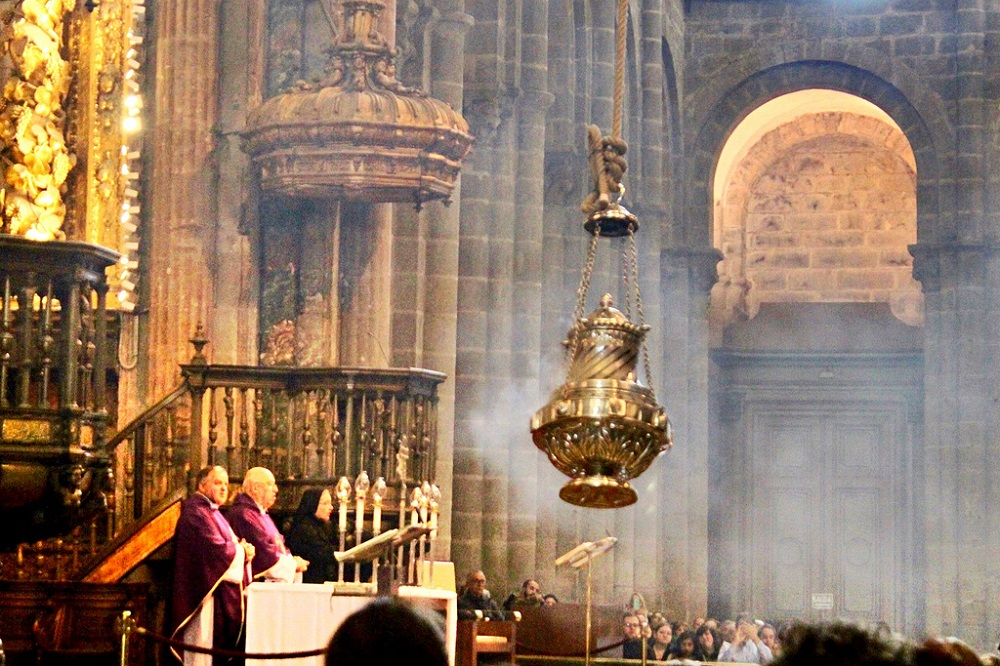

Botafumeiro

El Botafumeiro es un inmenso incensario de latón bañado en plata que pesa 62 kilogramos vacío y mide 1,60 metros de altura. La cuerda que lo sostiene, atada al crucero de la catedral, en la actualidad es de un material sintético, tiene una longitud de 65 m, 5 centímetros de diámetro y pesa 90 kg. El Botafumeiro se llena con unos 40 kg de carbón e incienso (con lo que supera los 100 kg de peso al inicio de sus movimientos), después se ata con fuertes nudos a una larga cuerda que va hasta el techo del edificio, y se desplaza mediante un mecanismo de poleas por la nave de la iglesia.
La tradición dice que el uso del incensario en la catedral de Santiago empezó en el siglo XI, con la idea de perfumar el templo y eliminar el mal olor que dejaban los peregrinos, cansados, sudorosos y desaseados y muchos de ellos enfermos.